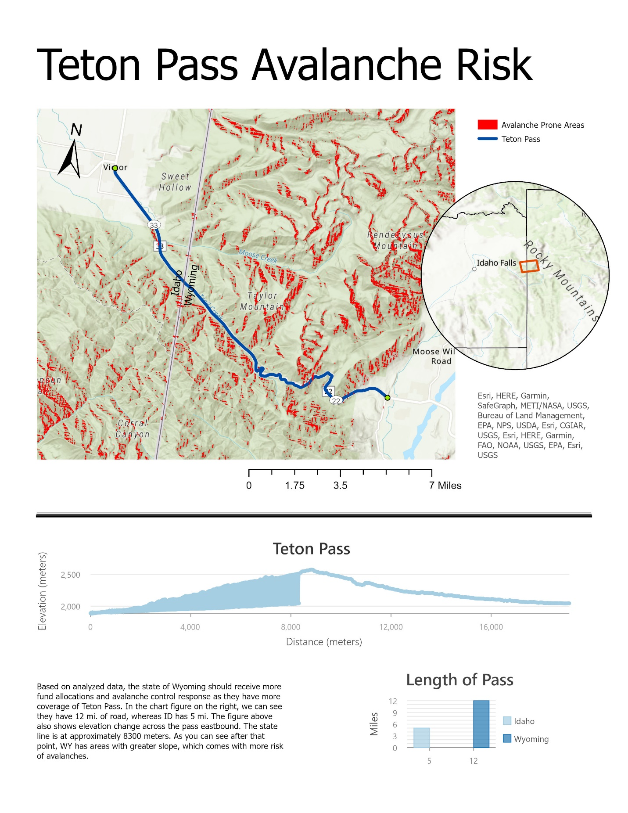
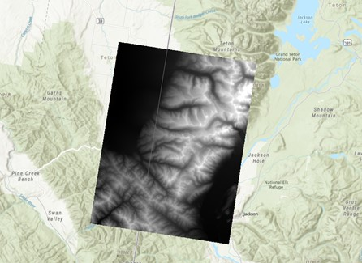
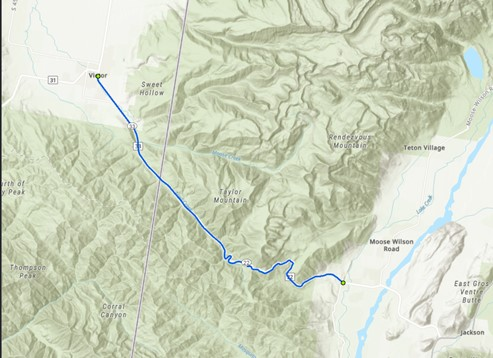
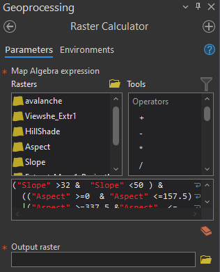
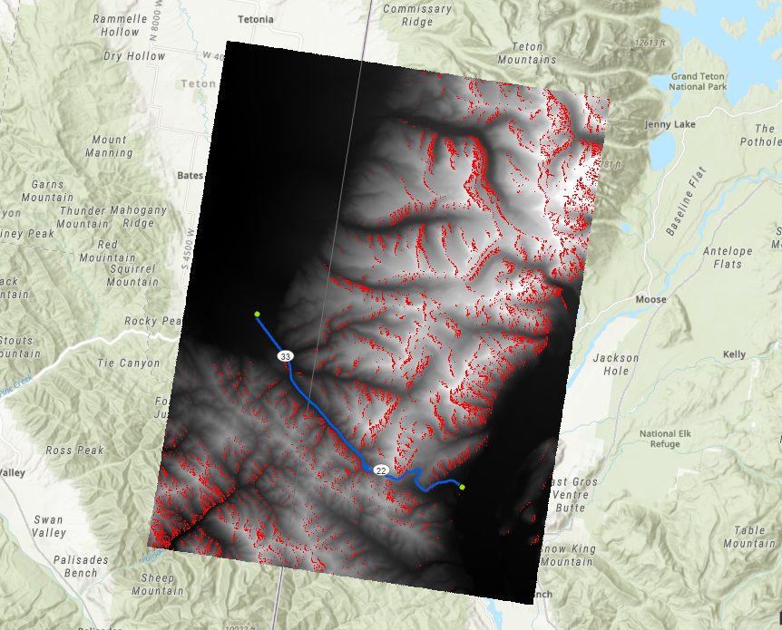
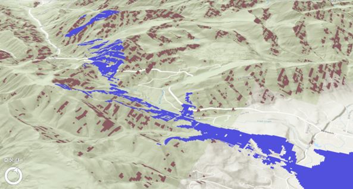
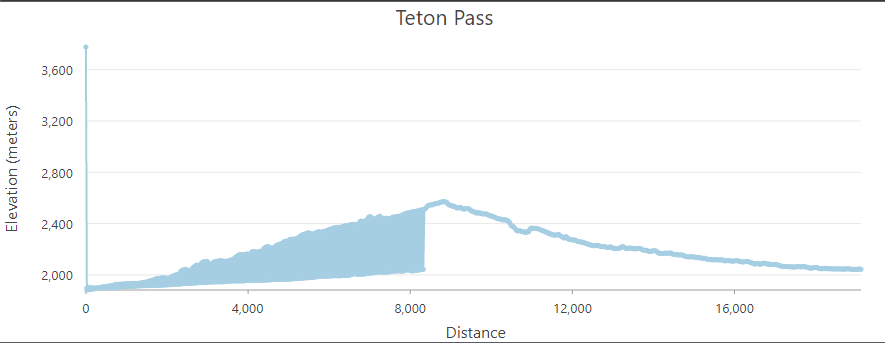

GIS Coursework / Week 10
Teton Pass Avalanche Risk

Overview
Modeled avalanche-prone terrain around Teton Pass, Wyoming, using elevation, slope, aspect, and land cover data, plus a viewshed to see which slopes could be seen from a high point.
Process
Mosaicked two DEMs, derived slope and aspect layers, then used Raster Calculator with land cover data to flag terrain matching avalanche-prone criteria.





